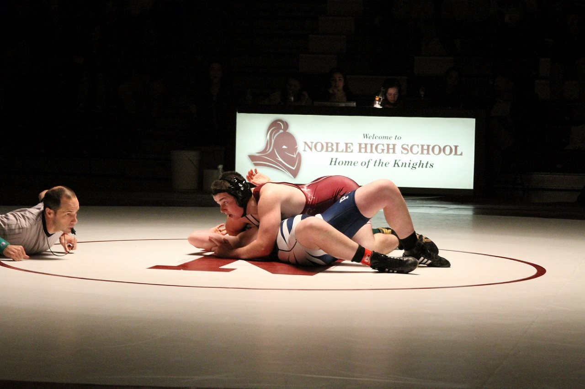
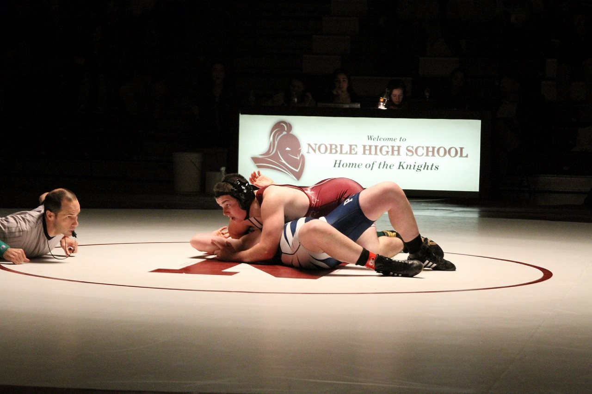

I was the first and only child of my two parents.
My parents deciding to buy a house in the town of North Berwick which is about 25 minutes from Dover, NH.
Some of my first memories as a child is running around my front yard which is around the size of a football field and catching frogs in my pond with all my cousins.
As I started to grow older I started to fall in love with sports, though I tried numerous sports, three really stuck to me. Those are Football, Wrestling, and Baseball.
 
 
During my senior year of high school time started to fly by with me being so busy with sports. I was offered two offers to play football at the collegiate level, one being at Plymouth State University and the other being at Maine Maritime Academy.
Though in the long run my journey through life did not lead me down either of those paths but the to the University of Maine.